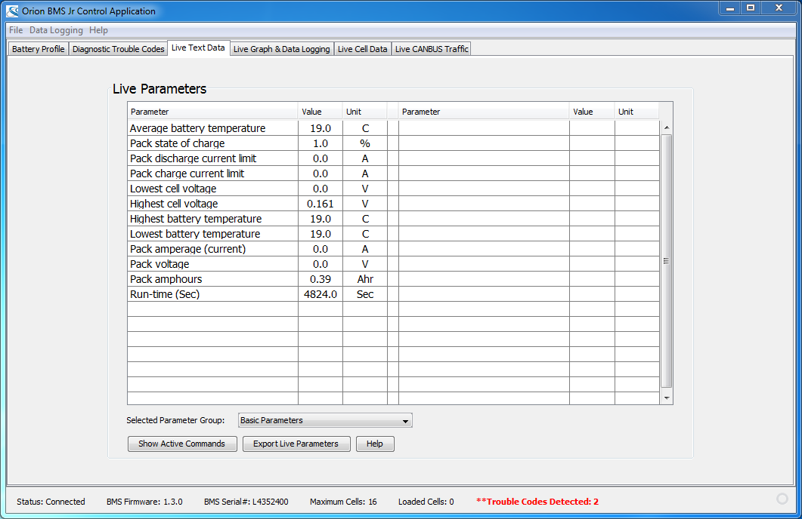

This screen provides real-time access to various different BMS parameters. Please see Appendix B: BMS Data Parameters for more details on what the specific parameters mean.
The active information available on the screen can be exported to the hard-disk as a CSV (comma spaced value) file by pressing "Export Live Parameters' and selecting a destination file.
| < Battery Profile | Live Graph Data > |